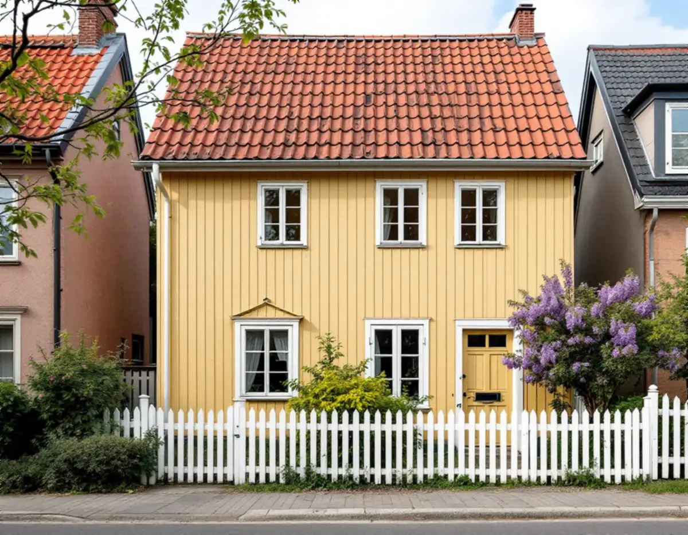
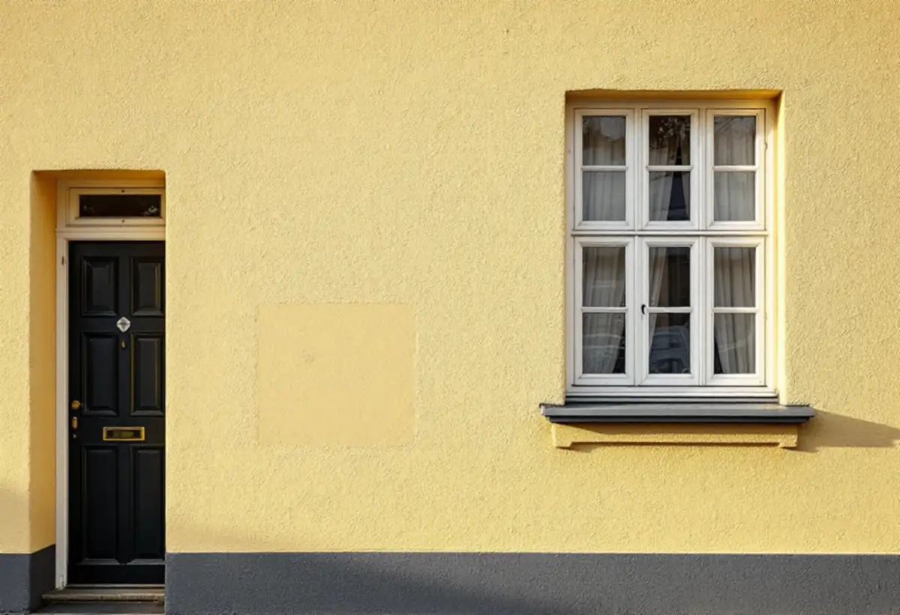

Besök
Vi tittar på fasaden, letar efter spår av den ursprungliga panelen eller putsen och mäter detaljer.
Gamla Enskede byggdes mellan 1908 och 1913 med typhus, och från början hade varje hustyp samma fasad- och takmaterial. Med åren har en del trähus fått nya skal av eternit eller plåt, medan andra har rustats tillbaka. Geal Entreprenad AB renoverar fasader i Gamla Enskede, Enskededalen och Enskedefältet, med gratis platsbesök och skriftligt kostnadsförslag.

Stadsmuseets byggnadsinventering av Gamla Enskede från 1974–1977 beskriver hur området från början var sammanhållet: samtliga byggnadstyper hade enhetliga fasad- och takmaterial, samstämmig färgsättning och likartade staket och grindar. Inventeringen konstaterar sedan att trähus som tidigare underhållits med traditionella material ibland försvann bakom en fasad av eternit eller plåt, och att om- och tillbyggnader ryckte sönder skala och proportioner, särskilt bland typhusen.
Inventeringen ger två förklaringar: nya ägare med andra krav och ambitioner, och byggindustrins stora utbud av nya material och metoder. Men den noterar också motsatsen. Flera husägare hade redan då rustat sina hus genom att byta ut gammal träpanel mot ny av samma typ, eternitfasader från 1950-talet hade plockats bort så att husen åter framstod som trähus, och fler ursprungliga fönster fick sitta kvar.
Det är fortfarande den vanligaste frågan vi får om äldre Enskedehus med skivfasad: går det att ta fram trähuset igen, och vad finns kvar under skivorna?

Boverket skriver att många fasader under 1940- och 1950-talen kläddes med cementfiberplattor som innehöll asbest, och att fibrerna kan frigöras när plattorna bearbetas, till exempel om man borrar i dem. Innan en sådan fasad tas ner tas därför prover. Enligt Arbetsmiljöverket krävs tillstånd för att riva asbesthaltigt material på tak eller fasad, så den delen görs av ett företag som har det tillståndet. Därefter kan vi bedöma panelen bakom.
Ibland är den gamla panelen hel nog att lagas och målas. Ofta har den spikats sönder när skivorna monterades, eller ruttnat där vatten trängt in bakom plåten. Då byts den mot ny panel av samma typ och dimension, precis som husägarna i inventeringen gjorde. Hörnbrädor, foder och vattbrädor ska ha samma mått som i husets ursprungliga utförande, och äldre ritningar på huset kan sökas fram via stadens e-tjänst Bygg- och plantjänsten.
Alla hus i Enskede är inte av trä. Inventeringen beskriver typhus I, enfamiljsradhus ritade av arkitekten Viktor Bodin, som stenhus med kalkputsad fasad i slät- och spritputs, avfärgad i gul färgton. Stadens lantegendomsnämnd uppförde 37 sådana radhus 1908–1909, i sex huslängor längs Margaretavägen.
Boverket skriver att kalkputs kan suga upp, transportera och avge fukt utan att skada stommen, men att putsen skadas om fuktbelastningen blir för stor, och att fuktig puts kan frysa sönder om fukten sitter kvar över vinterhalvåret. Enligt myndigheten är fukt nästan undantagslöst orsaken till putsbortfall. Innan vi lagar en putsfasad letar vi därför efter orsaken, oftast vid takfot, fönsterbleck eller sockel.
Lagningar görs med kalkbruk och samma struktur, slät eller sprutad, så att de smälter in. För radhusen innebär det också att samma lösning bör väljas för hela längan. Ska taket ses över samtidigt finns mer under takrenovering i Enskede.
Byte av material på fasad räknas som fasadändring, och staden räknar också tilläggsisolering hit. För en- och tvåbostadshus krävs normalt inget bygglov sedan 1 december 2025, men inom riksintresse för kulturmiljövården och i områden som utpekats som särskilt kulturhistoriskt värdefulla gäller utökad lovplikt. Stadsmuseets klassificeringskarta visar var de gränserna går.
Att byta en eternitfasad mot panel av husets ursprungliga typ kan därför kräva lov på samma sätt som det omvända. Vid en ansökan vill staden ha fasadritning i skala 1:100 och en material- och kulörbeskrivning med NCS-koder. Vi hjälper dig att ta fram underlaget, och vill du ha ett besked om husets värde kan du vända dig till Stadsmuseet.
Vi tittar på fasaden, letar efter spår av den ursprungliga panelen eller putsen och mäter detaljer.
Skivfasader provtas för asbest, och vi kontrollerar husets läge i Stadsmuseets karta.
Rivning, ny panel eller putslagning och målning redovisas var för sig i ett skriftligt förslag.
Asbesthaltiga skivor tas ner av ett företag med tillstånd innan vårt arbete börjar.
Panel av samma typ monteras eller putsen lagas med kalkbruk i rätt struktur.
Fasaden ytbehandlas och vi går igenom resultatet tillsammans.
Att byta och reparera fasader, mura och reparera putsade fasader och måla fasader är rotarbete i ett småhus enligt Skatteverket, liksom att montera och ta ner byggnadsställningar i samband med arbetet.
Avdraget är 30 procent av arbetskostnaden, högst 50 000 kr per person och år och högst 75 000 kr tillsammans med rutavdrag. Material och resor ingår inte. Geal drar avdraget direkt på fakturan.
Om en skivfasad måste provtas och rivas, hur mycket av den gamla panelen som går att rädda, om detaljer som foder och hörnbrädor måste tillverkas i äldre mått och hur stora putsskador det rör sig om. De smala gatorna och små tomterna påverkar också hur ställningen kan stå. Platsbesöket är gratis och du får ett skriftligt kostnadsförslag.
Puts, panel och tilläggsisolering.
Fasadrenovering i Stockholm →Takbyte, takbesiktning och plåtarbeten.
Takläggare i Enskede →Trädgårdsstad med lertegel.
Takrenovering i Enskede →Typhus i trä, träbjälklag och bostadsrätt.
Badrumsrenovering i Enskede →Byggplatsen, gatan och träden.
Byggföretag i Enskede →Trädgårdsstadens kulörer.
Fasadmålning i Enskede →Trädgårdsstadens fönster.
Fönsterrenovering i Enskede →Lut, såpa och olja på fur och gran.
Golvläggare i Enskede →Slipa fram gamla brädgolv i villan.
Golvslipning i Enskede →Typhus, dubbelhus och småstugor.
Köksrenovering i Enskede →Trädgårdsstad, egnahem och småstugor i Enskede.
Målare i Enskede →Snörasskydd, rännor och verandaplåt i Enskede.
Plåtslagare i Enskede →Verandor, entréer och bodar i trädgårdsstaden.
Snickare i Enskede →Tapet i vindsrum och snedtak.
Tapetsering i Enskede →Små tomter och riksintresse.
Tillbyggnad i Enskede →Renovera innan ni flyttar in.
Totalrenovering i Enskede →